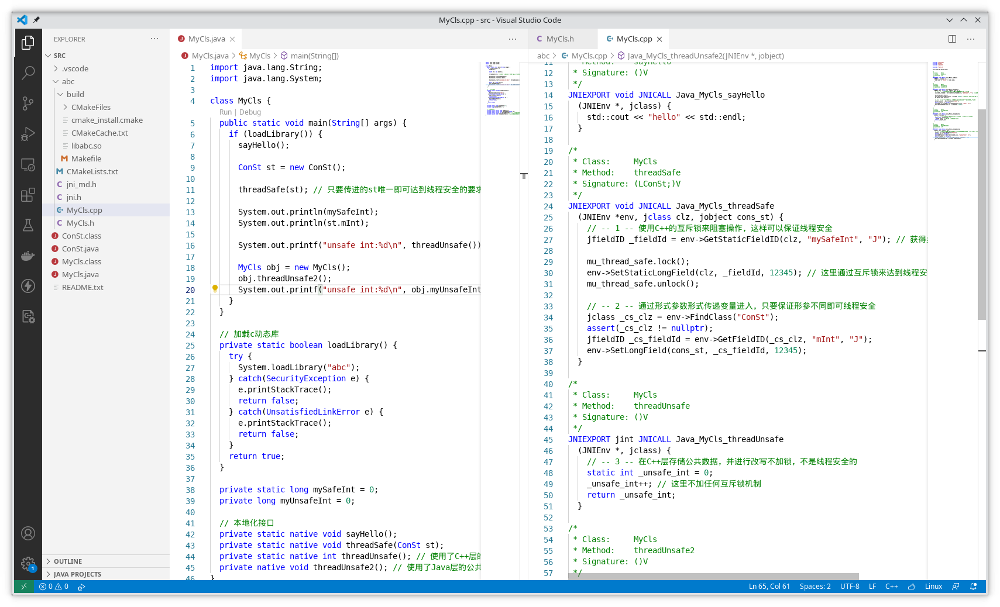
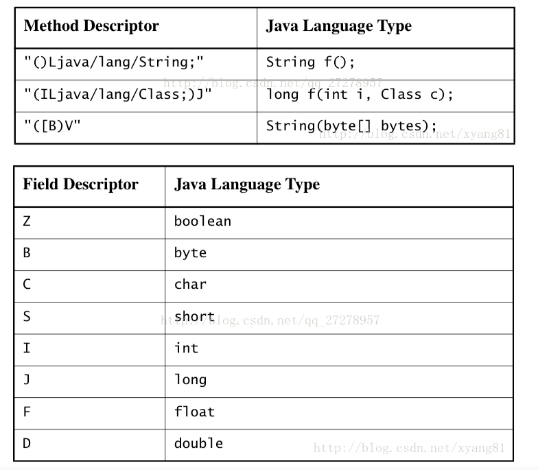

JNI 开发是什么
因本人以前工作中做过此类工作，再加上老同事的疑问，所以，今天抽出时间来探讨一下JNI的开发问题和特定细节（调用的线程安全问题），其实这种JNI层调用和任何其他语言调用C/C++层结构都差不多，比如说CGO，其涉及到Golang和C/C++层的调用，很多方面都存在类似之处。
JNI开发是使用Java提供的本地化接口，比如C/C++（也可以是其他语言），允许Java虚拟机里面的已经编译的代码和外界的本地化代码进行交互。
因为Java是推崇平台可移植性的，本地化代码看起来破坏了可移植性，但是很多时候却是不可避免的，因为很多时候Java是无法实现一些比较底层功能的。
JNI开发需要哪些工具
在我的机器里面是安装的OpenJDK11和GCC11，运行平台是Linux环境，为了提高编码效率，我使用的是VSCode，外加Java插件，CMake插件和C++插件。
这里列举一下工具链：
- OpenJDK 11
- GCC 11
- CMake 3.21
- VSCode 最新版
截图：

关于OpenJDK为何找不到javah，可以参考这里，意思就是javah已经被移除了，现在可以通过javac来完成同样的操作：
以上假设在当前目录的MyCls.java存在本地调用，它会在当前目录下创建一个abc目录，并且写入C++层的JNI调用头文件，你只需要在写一个和之对应的C++源代码即可。
术语解释
其实线程安全是什么意思都可以通过搜索找到，也许你已经知道什么意思，不过这里不妨碍我再叙述一遍：
线程安全是指某个函数在多线程的环境下被多次调用时，能够使得多线程的每个调用者都可以得到自己想要的正确结果。
主要因素
产生线程安全问题的原因是因为函数调用需要对公共变量进行修改
这会涉及到四种情形：
- 静态Java本地调用改C++层的公共数据
- 静态Java本地调用改Java层的公共数据
- 动态Java本地调用改C++层的公共数据
- 动态Java本地调用改Java层的公共数据
所以说只要涉及到公共数据都会产生线程安全的问题。
至于什么是静态/动态Java本地调用？区别就是对应本地调用是否被static修饰，修饰者属于类的调用，否则属于被申请的对象的调用，与之分别对应静态/动态调用。
还有C++/Java层公共数据是什么？C++层的公共数据就是C++里面全局可以访问的变量，而这里的Java层公共变量指的是用C++访问/修改在Java类或者Java对象中的公共变量。
实例操作
以下我写了一个demo用于阐述JNI调用的线程安全的问题。
Java部分
java部分的代码写得很简单，声明了几个本地JNI接口，并在main中调用之：
1 | class MyCls { |
上面的主体部分就是这三个本地调用的使用，threadSafe()实际上可以拆开成两个函数的，注意下面的C++部分的代码，为了省事，我把写在一块了。
threadSafe()是线程安全的在任意调用次数后，都会返回正确的结果，而下面的threadUnsafe()和threadUnsafe2()则不是线程安全的，在很多线程执行时会得到混乱的结果。
C/C++部分
1 | std::mutex mu_thread_safe; |
以上四处标识中，第一个函数threadSafe()处，通过C++的互斥锁来对公共变量修改是一种方案，但是它对于大量并发的操作而言，效率低下，因为它是互斥线性化的，所以一般推荐第二处标识的方案，它让用户传递一个自定义的类型对象，C++层就对这个对象进行修改，调用者负责它传递的对象唯一，那么对于大量的并发操作而言，得到的结果也必然是正确的。
对于第三处和第四处是线程安全要求下不能满足的反例，第三处是没有对C++层公共数据添加加锁机制，而第四处是和第三处类似的，不同之处在于它的修改是在Java代码里的变量。
关于GetFiledID()的第四个参数
sign是什么意思？它是Java代码对这个函数的表述，可以参照下面这张图（还是从别人的那里截图过来的），更多详情可以查找官方文档。
总结
保证线程安全的要求是对公共资源恰当使用，最好不要用公共资源，让调用者传递参数值作为修改变量来使用，效果最佳。
链接：
demo下载